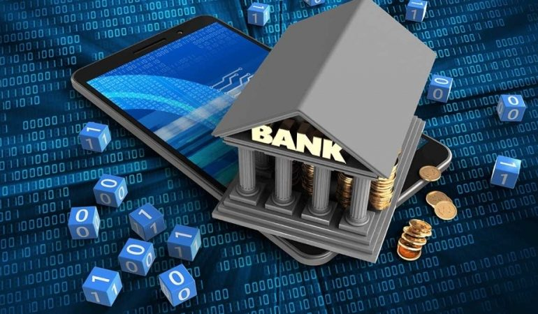

გამორჩეული უსაფრთხოება: სოლიდბანკი იყენებს ბლოკჩეინის ტექნოლოგიას და მრავალდონიან ავტორიზაციას თითოეული ტრანზაქციისთვის.
ეს ნიშნავს, რომ მომხმარებლის ანგარიშები მაქსიმალურად დაცულია ნებისმიერი სახის კიბერ საფრთხისგან.
გრძელვადიანი ინვესტიციები: სოლიდბანკი მომხმარებელს სთავაზობს დაბალანსებულ საინვესტიციო პაკეტებს,
რომლებიც გათვლილია გრძელვადიან სტაბილურობაზე, რაც ხანგრძლივი ფინანსური კეთილდღეობის მიღწევას უწყობს ხელს.
სტაბილური შემოსავლის პროგრამები: ბანკი მომხმარებელს აძლევს დანაზოგების პლატფორმას, სადაც მათ შეუძლიათ დაბანდებული თანხიდან სტაბილური შემოსავლის მიღება.
ამას ემატება საგარანტიო ფონდები, რომლებიც კიდევ უფრო ზრდის დაცულობას.
კორპორატიული მომსახურება: სოლიდბანკი აქცენტს აკეთებს კორპორატიულ მომხმარებელზე და სთავაზობს საკრედიტო ხაზებს, საერთაშორისო ფინანსურ სერვისებს და კონსულტაციებს.
ეს ბანკი განსაკუთრებით მიმზიდველია მცირე და საშუალო ბიზნესებისთვის, რომლებიც სანდო პარტნიორს ეძებენ.

"სოლიდბანკი" მიზნად ისახავს მომხმარებლებს სრულყოფილი ფინანსური დაცულობა და სტაბილურობა შესთავაზოს,
რაც მათ შესაძლებლობას აძლევს გაატარონ ფინანსური გადაწყვეტილებები სრული ნდობით.
სოლიდ ბანკის კორპორატიული სოციალური პასუხისმგებლობა:
სოლიდ ბანკი არ არის მხოლოდ კომერციული ორგანიზაცია; ის ასევე აქტიურადაა ჩართული საზოგადოებრივ პროექტებში. ბანკი მონაწილეობს ეკოლოგიურ ინიციატივებში,
ხელს უწყობს ახალგაზრდა მეწარმეთა დაფინანსებას და მხარს უჭერს განათლების ხელმისაწვდომობის ზრდას.
სოლიდ ბანკი
სოლიდ ბანკი არის ერთ-ერთი გამორჩეული ბანკი საქართველოში, რომელიც უზრუნველყოფს სხვადასხვა ფინანსურ მომსახურებებს, როგორიცაა დეპოზიტები, სესხები, ინვესტიციები და საკრედიტო ბარათები.
ბანკი დაფუძნდა 1993 წელს და მისი მიზანი არის მომხმარებელთა საჭიროებების დაკმაყოფილება და თანამედროვე საბანკო მომსახურების შეთავაზება.

ბანკი ასევე გთავაზობთ ბიზნეს საკრედიტო პროდუქტებს და სხვა ფინანსურ მომსახურებებს მცირე და საშუალო ბიზნესისთვის.
სოლიდ ბანკი მუდმივად მუშაობს ახალი ტექნოლოგიების დანერგვაზე და ცდილობს თავისი მომსახურებების დახვეწას.